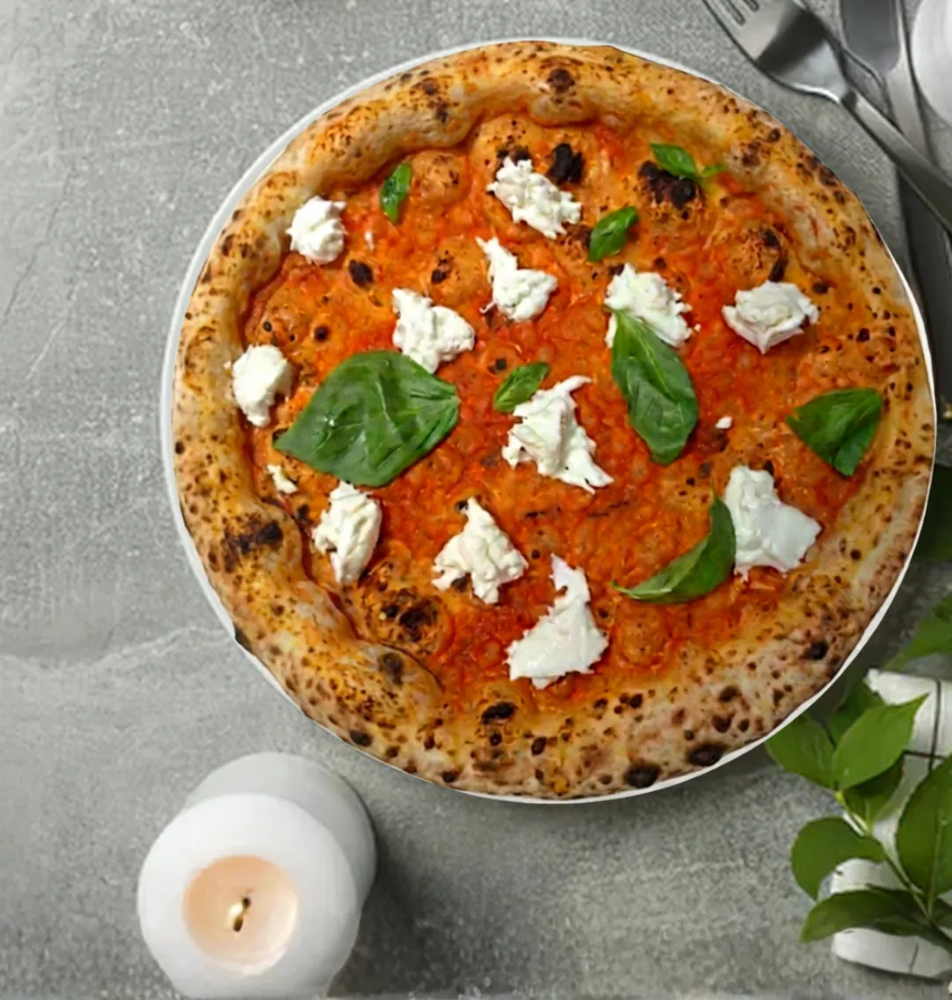
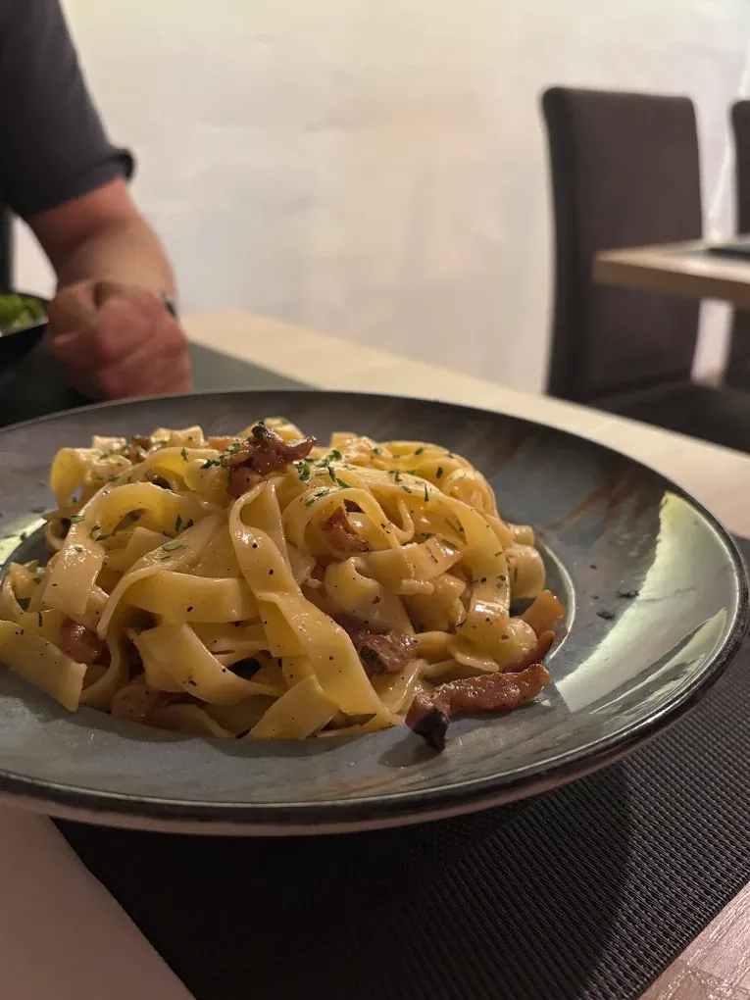
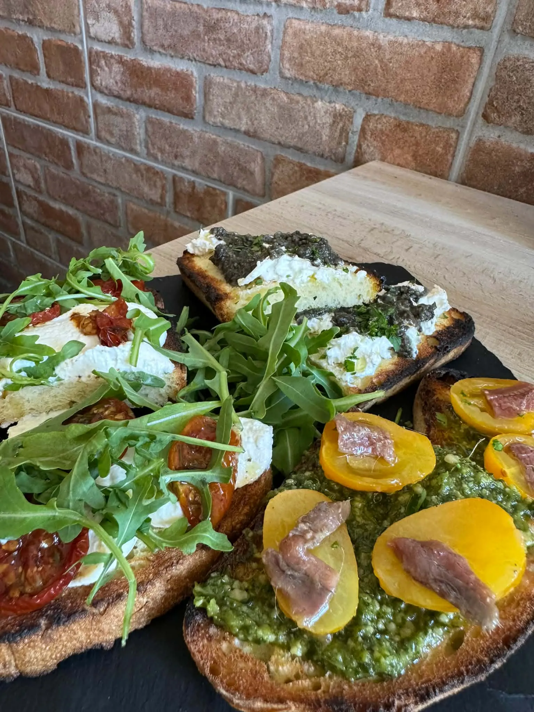
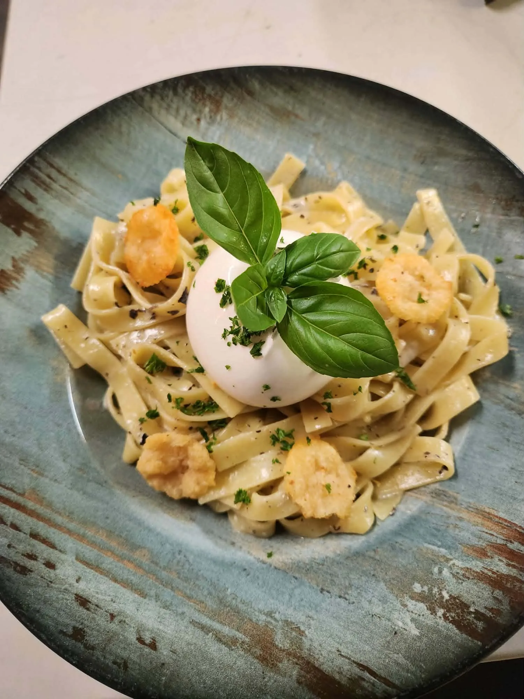
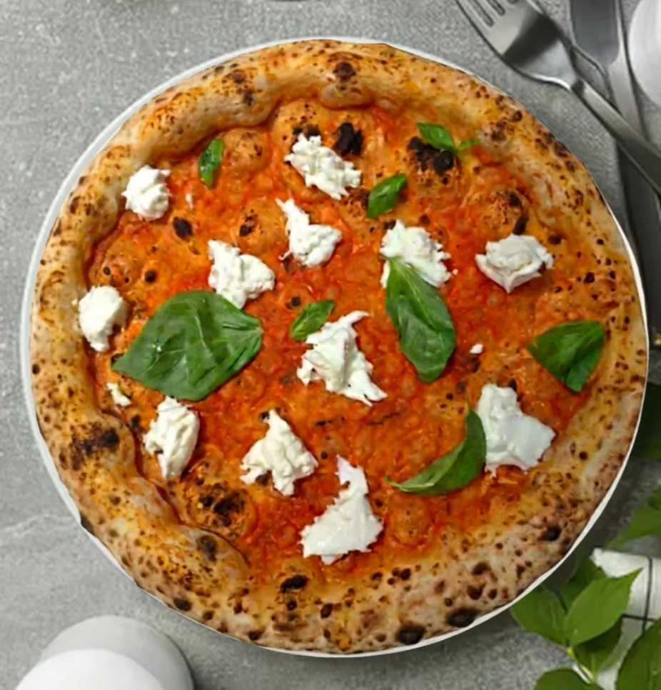
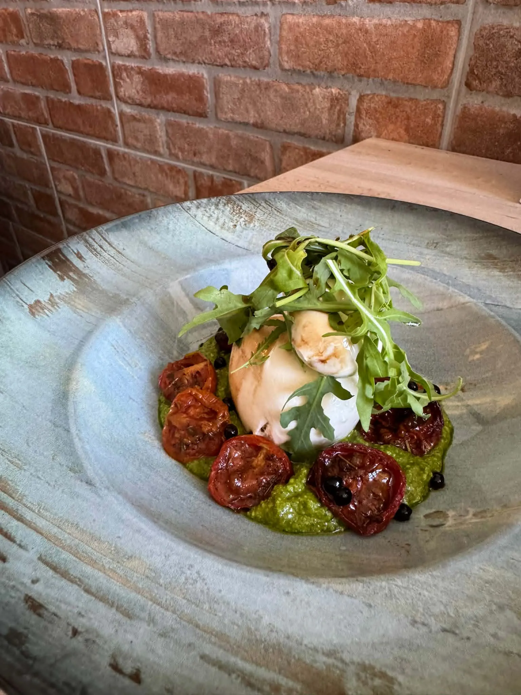
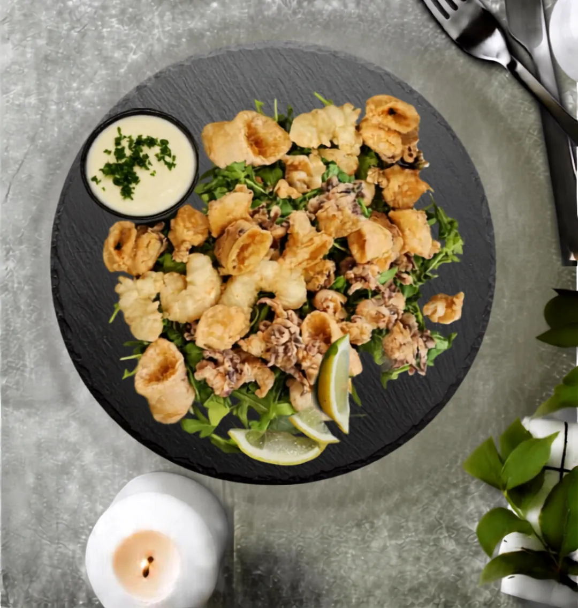
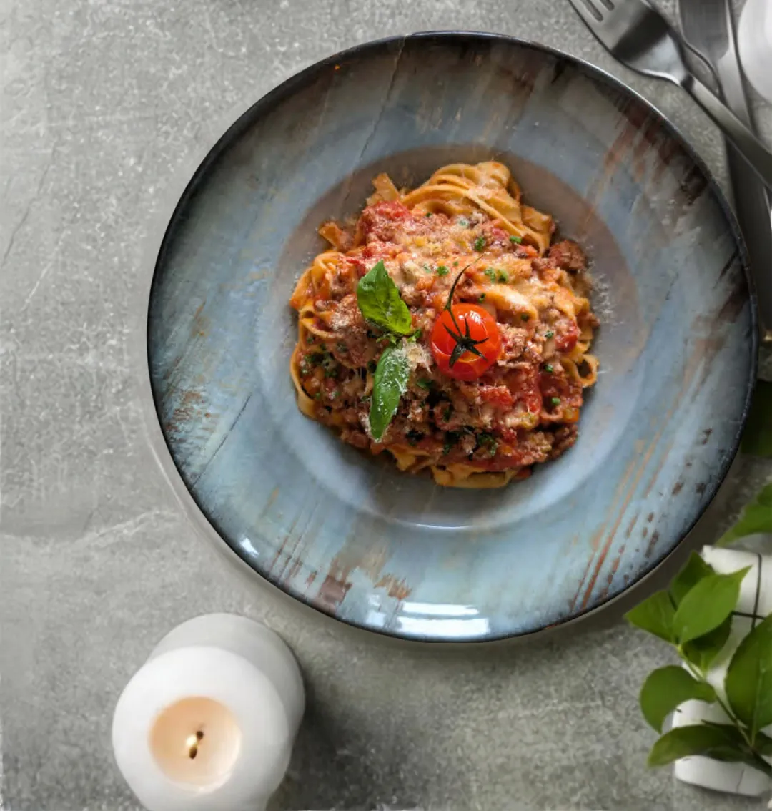
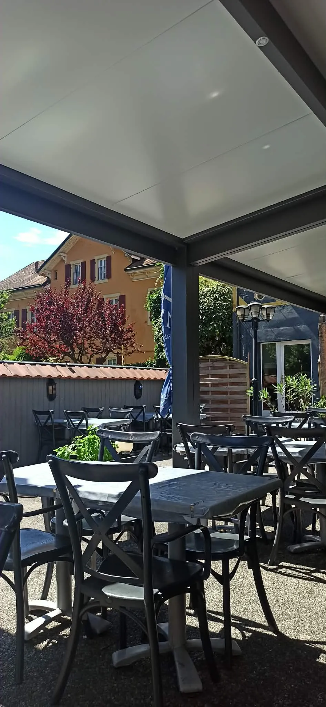

Pizzeria · Yverdon-les-Bains
CiaoCiao
Une pâte légère, une cuisson maîtrisée : la pizzeria incontournable d'Yverdon, rue des Pêcheurs, depuis 2010.


2010
Avec le sourire et l'envie de faire plaisir
Depuis 2010, Ciao Ciao prépare ses pizzas avec des ingrédients frais et de qualité.
Grâce à la fidélité de ses clients et à la passion de la cuisine italienne, la maison est devenue une adresse incontournable pour les amateurs de bonnes saveurs. De passage ou habitué, on vous accueille de la même façon.
La carte
Antipasti, pâtes et pizzas
Des grands classiques et des créations de la maison, à partager ou non.

Antipasti
Des ingrédients frais, une invitation au partage.
- Burrata du Chef14.-Pesto di rucola, tomates confites, burrata et perles de balsamique
- Trio de Bruschetta14.-Rucola et ricotta ; crème de truffe et stracciatella di bufala ; pesto, datterino jaune et anchois
- Crocchetta façon Ciao-ciao12.-Aubergines panées et frites, sauce tomate, parmesan, mozzarella
- Yuzu Crunch14.-Friture de calamars et de gambas, mayonnaise maison au yuzu

Pâtes
Tagliatelle ou spaghetti, des classiques aux plus gourmandes.
- Bolognaise21.-Ragoût traditionnel de bœuf et basilic
- Carbonara24.-Lard fumé, œuf et pecorino
- Alla norma24.-Sauce tomate, aubergines frites, ricotta salée
- Tartufina32.-Tagliatelle au pesto de truffe, burrata et chips de parmesan

Pizzas
Une pâte légère, une cuisson maîtrisée, de la plus classique à la plus généreuse.
Et pour finir, les dolci
- Tiramisu14.-Savoiardi imbibés au café, mascarpone, cacao et zeste de citron
- Moelleux au chocolat12.-Fondant, avec sa boule de glace à la vanille
- Nutellina14.-Pizza à la pâte à tartiner à la noisette et éclats de pistache
- Panna cotta14.-Crème, lait, vanille et coulis de fruits rouges
Aussi en livraison, sur les plateformes de livraison.
Réserver une table



Horaires de cuisine
| Lundi – jeudi | 11h30 – 14h 18h30 – 22h30 |
| Vendredi – samedi | 11h30 – 14h 18h30 – 23h |
| Dimanche | Fermé |